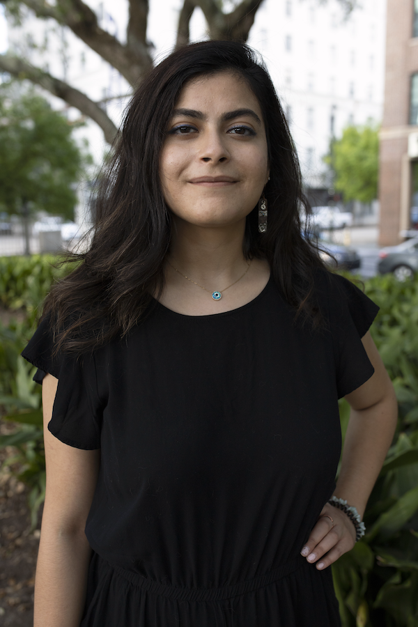

Diana Abouchacra

Objective
Highly creative and passionate artist with a heavy background in fine art and higher education. Detail-oriented and emotionally intelligent person with experience in managing and teaching. Hard-working and organized educator with a student-centered teaching approach - experienced in teaching both hybrid and online classes.
Education
- Master of Fine Arts in Studio Art
Louisiana State University - Baton Rouge, LA
August 2018 to August 2021
Work Experience
-
Creator & Art Instructor
-
The Wild Artist - Al Chouf
December 2023 to Present
-
Artist Resident
-
Beirut Printmaking Studio - Beirut
September 2023 to June 2024
-
Special Education Teacher Assistant
-
Futures Inc. - West Hartford, CT
April 2023 to June 2023
-
Help special needs students one on one with subjects such as Math, Science, English, Writing, etc.
-
Instructor of Record
-
Louisiana State University - Baton Rouge, LA
2019 to 2021
-
Introduction to 2-Dimensional Design: In-person and online classes. Foundations Course. Responsible for introducing students to the elements and principles of design. Creating engaging lesson plans and assignments.
-
Introduction to Printmaking: Hybrid class. Responsible for introducing printmaking processes: relief and intaglio. Creating engaging lesson plans and assignments.
-
Art Museum Guide & Youth Educator
-
Louisiana State University Museum of Art - Baton Rouge, LA
2019 to 2020
ArtWorks. Arts Youth Education Program.
-
Led museum tour groups from grades k-8, teaching about art basics, color, shape, etc.
-
Created and led art activities for youth tour groups
-
Installed/Deinstalled artworks created by youth in subsequent museum exhibitions
Skills
Hands-On Skills
-
Curating
-
Exhibition Install & De=Install
-
Digital & Film Photography
Application Skills
-
Adobe Suite | Photoshop, InDesign, Illustrator, Premiere Pro
-
MS Office | Word, PowerPoint, Excel
-
Coding | HTML & CSS
-
The Museum System (TMS)
Collections Management Software Proficiency
-
Data Entry & Archiving
Awards
-
2021
Best In Show, Winner of the Helis Foundation Art Prize
Ogden Museum of Southern Art, New Orleans, LA
-
2018 - 2021
Graduate Teaching Assistantship
Louisiana State University, Baton Rouge, LA
-
2019
Gallery Work-Study
Arrowmont School of Arts and Crafts, TM
-
2018
Juror’s Commendation, The Boston Printmakers, “10th Student Print Exhibition”, Lesley University, MA
-
2017
Hilla Rebay Post Baccalaureate Fellowship in Studio Art, Trinity College, CT
Senior Class Print, UConn School of Fine Arts
“Coalesce”, University of Connecticut, CT
BFA Faculty Award, UConn, CT
-
2016
UConn IDEA Grant, Office of Undergraduate Research, UConn, CT
Rhoda Shivers Memorial Award in the Arts, UConn, CT
New England Scholar, UConn, CT
Arts Talent Scholarship, UConn, CT
-
2015
Arts Talent Scholarship. UConn, CT
Cultural Integration and Student Life Participation, ISI Firenze, Italy
Global Citizen Award, UConn, CT
Language
-
Verbal and Written Skills
-
Billingual | English (fluent), Arabic (intermediate)
Other